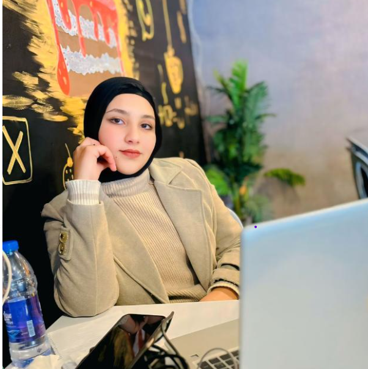

Hadeel Tawfiq Diab SafiIntelligent Systems & Computer Engineering Student Gaza, Palestine | hadeelsafi80@gmail.com |
 |
A dedicated third-year Intelligent Systems and Computer Engineering student at Al-Aqsa University. Alongside my passion for advanced technology, machine learning, and cybersecurity, I have a keen eye for fashion and styling. I balance my intensive engineering studies by exploring modern design trends, caring for cats, and enjoying Korean cinematography.
| Degree / Major | Institution | Duration | Academic Status |
|---|---|---|---|
| B.Sc. in Intelligent Systems & Computer Engineering | Al-Aqsa University | 2023 - Present | Third-Year Student (Excellent Standing) |
| High School Diploma | Gaza Schools | Graduated 2022 | Excellent Grade |